Остров Снов — справочник
Кастомная игра Dota Остров Снов. Данные из файлов игры. ← каталог DotaUpUp
Предметы 81
Бонусы за уровень 49
Артефакты 10
Обычные 51
 Maconspoon 梅肯斯普3 → след. уровень
Maconspoon 梅肯斯普3 → след. уровеньL3
Усиление физического урона +1%
Ловкость +200
 Атакующий коготь 攻击之爪3 → след. уровень
Атакующий коготь 攻击之爪3 → след. уровеньL1
Сила атаки +30
 Баомянь 宝冕3 → след. уровень
Баомянь 宝冕3 → след. уровеньL2
Полных атрибутов в секунду +1
 Блеск 辉耀3 → след. уровень
Блеск 辉耀3 → след. уровеньL4
Здоровье +12000
Все характеристики +600
Наносит магический урон основного атрибута * 75% врагам в пределах 650 ярдов вокруг него каждую секунду.
 Большой меч 大剑3 → след. уровень
Большой меч 大剑3 → след. уровеньL3
Сила атаки +1200
 Брекеты на запястье 护腕3 → след. уровень
Брекеты на запястье 护腕3 → след. уровеньL2
Шанс критического удара +1,5%
 Быстрая вспышка 迅疾闪光3 → след. уровень
Быстрая вспышка 迅疾闪光3 → след. уровеньL4
Ловкость +2 в секунду
Скорость атаки +20
 Вихрь 漩涡3 → след. уровень
Вихрь 漩涡3 → след. уровеньL4
Ловкость +1800
Скорость атаки +20
Уменьшите собственную броню на 20%. Таким образом, вы получите 0.1 очков пробивания брони за каждое 1 очко снижения брони.
 Военный барабан 战鼓3 → след. уровень
Военный барабан 战鼓3 → след. уровеньL3
Скорость атаки +10
Все характеристики +400
 Вспышка процветания 盛势闪光3 → след. уровень
Вспышка процветания 盛势闪光3 → след. уровеньL4
Сила в секунду +2
здоровье в секунду +3
Атака имеет вероятность вызвать у противника кровотечение продолжительностью 3 секунд и увеличить получаемый врагом урон на 5%.
 Диск вечности 永恒之盘3 → след. уровень
Диск вечности 永恒之盘3 → след. уровеньL4
Здоровье +12000
Сила убийства +1
 Длинный щит 长盾3 → след. уровень
Длинный щит 长盾3 → след. уровеньL4
Эффективность убийств +2%
Все характеристики +600
При убийстве врага есть шанс получить 80 ко всем атрибутам, 80 к урону от атак, 160 здоровья и 0.3 брони, до 600 зарядов.
 Духовой ящик 灵匣3 → след. уровень
Духовой ящик 灵匣3 → след. уровеньL4
Интеллект +1800
Количество отскоков +1
 Жемчужина, подавляющая яд 淬毒之珠3 → след. уровень
Жемчужина, подавляющая яд 淬毒之珠3 → след. уровеньL4
Пробитие брони +10
Скорость атаки +20
 Интеллектуальный плащ 智力斗篷3 → след. уровень
Интеллектуальный плащ 智力斗篷3 → след. уровеньL1
Интеллект +30
 Камень души 镇魂石3 → след. уровень
Камень души 镇魂石3 → след. уровеньL4
Все характеристики +4 в секунду
Здоровье +2 в секунду
Уменьшите скорость атаки 10% и скорость передвижения 10 врагов в радиусе действия 800.
Кольцо 圆环3 → след. уровеньL1
HP +600
 Кольцо защиты 守护指环3 → след. уровень
Кольцо защиты 守护指环3 → след. уровеньL1
Броня +8
 Кольцо плодородия 丰饶之戒3 → след. уровень
Кольцо плодородия 丰饶之戒3 → след. уровеньL3
Полных атрибутов в секунду +2
 Копье Магического Дракона (маленькое) 魔龙枪（小型）3 → след. уровень
Копье Магического Дракона (маленькое) 魔龙枪（小型）3 → след. уровеньL2
Дальность атаки +25
Все характеристики +60
 Кулон 挂件3 → след. уровень
Кулон 挂件3 → след. уровеньL2
Критический урон +3%
 Лук орлиной песни 鹰歌弓3 → след. уровень
Лук орлиной песни 鹰歌弓3 → след. уровеньL3
Ловкость +300
Ловкость +1 в секунду
 Маска вампира 吸血面具3 → след. уровень
Маска вампира 吸血面具3 → след. уровеньL2
Восстановление HP при атаке +130
L4
Сила атаки +1200
Восстановление здоровья от атаки +60
 Мистический посох 神秘法杖3 → след. уровень
Мистический посох 神秘法杖3 → след. уровеньL3
Интеллект +600
Интеллект в секунду +1
 Перчатки силы 力量手套3 → след. уровень
Перчатки силы 力量手套3 → след. уровеньL1
Сила +30
 Перчатки ускорения 加速手套3 → след. уровень
Перчатки ускорения 加速手套3 → след. уровеньL3
Скорость атаки +20
 Повязка на руку 臂章3 → след. уровень
Повязка на руку 臂章3 → след. уровеньL4
Сила атаки +1200
Сила +1800
Каждые 12 секунд получайте щит невосприимчивости к эффектам на 3 секунды.
 Подавляющий клинок 压制之刃3 → след. уровень
Подавляющий клинок 压制之刃3 → след. уровеньL4
Ловкость +1800
Ловкость при убийстве +1
При убийстве врага восстанавливается 2% недостающего здоровья.
 Поднимающий настроение драгоценный камень 振奋宝石3 → след. уровень
Поднимающий настроение драгоценный камень 振奋宝石3 → след. уровеньL4
Сила атаки +40
Увеличивает урон на 5% врагам, чье текущее здоровье ниже 30%.
 Пушистая шапка 毛毛帽3 → след. уровень
Пушистая шапка 毛毛帽3 → след. уровеньL4
Все характеристики +600
Убийств в секунду +2
 Рука Мидаса 迈达斯之手3 → след. уровень
Рука Мидаса 迈达斯之手3 → след. уровеньL4
Золото +2 в секунду
Все характеристики +600
Каждая эволюция имеет вероятность получения случайного сокровища 10%.
 Саньхуа 散华3 → след. уровень
Саньхуа 散华3 → след. уровеньL4
Сила +1800
Снижение урона +2%
+2% восстановление жизни
 Святой кулон 圣洁吊坠3 → след. уровень
Святой кулон 圣洁吊坠3 → след. уровеньL4
Здоровье +12000
Восстановление здоровья в секунду +0,1%
Уровень выпавшего с героя снаряжения повышается до уровня 1 и недействителен для снаряжения с уровнем выше уровня 3.
 Секретная вспышка 秘奥闪光3 → след. уровень
Секретная вспышка 秘奥闪光3 → след. уровеньL4
Интеллект +2 в секунду
Скорость применения навыков +10
Получайте 1 частей случайного снаряжения уровня [ 3 -4 ] каждые 4 минут.
Все игроки каждую секунду получают золотые монеты 3.
 Сила Дагона 达贡之神力3 → след. уровень
Сила Дагона 达贡之神力3 → след. уровеньL4
Интеллект +1800
Ускорение навыков +10
Каждый раз, когда используется навык, существует вероятность обновления его КД с 4%.
 Силовая обувь (Интеллект) 动力鞋（智力）3 → след. уровень
Силовая обувь (Интеллект) 动力鞋（智力）3 → след. уровеньL4
Интеллект +1800
Интеллект в секунду +2
 Силовая обувь (Сила) 动力鞋（力量）3 → след. уровень
Силовая обувь (Сила) 动力鞋（力量）3 → след. уровеньL4
Сила +1800
Сила +2 в секунду
 Силовая обувь (ловкость) 动力鞋（敏捷）3 → след. уровень
Силовая обувь (ловкость) 动力鞋（敏捷）3 → след. уровеньL4
Ловкость +1800
Ловкость +2 в секунду
 Силовой штаб 原力法杖3 → след. уровень
Силовой штаб 原力法杖3 → след. уровеньL4
Интеллект +1800
Интеллект +1 за каждое убийство
 Сфера Линкольна 林肯法球3 → след. уровень
Сфера Линкольна 林肯法球3 → след. уровеньL4
Все характеристики +600
Все характеристики +1 за каждое убийство секунда
Эффективность опыта +4%
 Тапочки ловкости 敏捷便鞋3 → след. уровень
Тапочки ловкости 敏捷便鞋3 → след. уровеньL1
Ловкость +30
 Теневой храм 影之灵龛3 → след. уровень
Теневой храм 影之灵龛3 → след. уровеньL4
Здоровье +12000
Здоровье +2 в секунду
Когда здоровье превышает 50%, физический урон увеличивается на 20%.
Когда здоровье ниже 50%, восстановление здоровья увеличивается на 20%.
 Топор Разбойника 掠夺者之斧3 → след. уровень
Топор Разбойника 掠夺者之斧3 → след. уровеньL3
Здоровье +6000
Сила +600
 Узор духа ветра 风灵之纹3 → след. уровень
Узор духа ветра 风灵之纹3 → след. уровеньL4
Ловкость +1800
Количество множественных попаданий +1
 Уничтожить 黯灭3 → след. уровень
Уничтожить 黯灭3 → след. уровеньL3
Сила атаки +300
Сила атаки +1 в секунду
 Филиалы 树枝3 → след. уровень
Филиалы 树枝3 → след. уровеньL1
Все характеристики +20
 Хрустальный меч 水晶剑3 → след. уровень
Хрустальный меч 水晶剑3 → след. уровеньL4
Шанс критического удара +2%
Урон от критического удара +6%
Когда его собственное здоровье ниже, чем 30%, он немедленно убегает в тень, становится неуязвимым на время и увеличивает скорость атаки 30, длящуюся 3 секунд, с временем охлаждения 30 секунд.
 Хуэйгуан 慧光3 → след. уровень
Хуэйгуан 慧光3 → след. уровеньL4
Усиление магического урона +1%
Интеллект +1800
 Череп Дробилка 碎颅锤3 → след. уровень
Череп Дробилка 碎颅锤3 → след. уровеньL4
Сила +1800
Усиление физического урона +2%
 Шлем Тиеи 铁意头盔3 → след. уровень
Шлем Тиеи 铁意头盔3 → след. уровеньL2
Броня +30
 Якша 夜叉3 → след. уровень
Якша 夜叉3 → след. уровеньL4
Ловкость +1800
Усиление физического урона +2%
Обычные атаки имеют вероятность 5% нанести урон, умноженный на 2.
Редкие 30
Блеск 辉耀3 → след. уровеньL5
HP +25000
Все характеристики +1600
Увеличение HP +3%
L6
Здоровье +80000
Все характеристики +4800
Увеличение здоровья +4%
Наносит магический урон основного атрибута * 100% врагам в пределах 650 ярдов вокруг него каждую секунду.
Быстрая вспышка 迅疾闪光3 → след. уровеньL5
Ловкость в секунду +3
Скорость атаки +20
Усиление физического урона +3%
L6
Ловкость в секунду +4
Скорость атаки +40
Усиление физического урона +4%
Вихрь 漩涡3 → след. уровеньL5
Ловкость +4000
Скорость атаки +20
Пробитие брони +20
L6
Ловкость +12000
Скорость атаки +40
Пробитие брони +40
Уменьшите собственную броню на 20%. Таким образом, вы получите 0.3 очков пробивания брони за каждое 1 очко снижения брони.
Вспышка процветания 盛势闪光3 → след. уровеньL5
Сила в секунду +3
здоровье в секунду +4
Снижение урона +3%
L6
Сила в секунду +4
Здоровье в секунду +6
Снижение урона +4%
Атака имеет вероятность вызвать у противника кровотечение продолжительностью 3 секунд и увеличить получаемый врагом урон на 10%.
Диск вечности 永恒之盘3 → след. уровеньL5
Здоровье +25000
Снижение урона +3%
Сила за убийство +1.5
L6
Здоровье +80000
Снижение урона +4%
Сила за убийство +2
Длинный щит 长盾3 → след. уровеньL5
Эффективность убийств +3%
Убийств в секунду +2
Все характеристики +1600
L6
Эффективность убийств +4%
Убийств в секунду +4
Все характеристики +4800
При убийстве врага есть шанс получить 90 ко всем атрибутам, 90 к урону от атак, 180 здоровья и 0.5 брони, до 600 зарядов.
Духовой ящик 灵匣3 → след. уровеньL5
Интеллект +4000
Количество рикошетных атак +2
Урон от рикошета +10%
L6
Интеллект +12000
Количество рикошетов +2
Урон от рикошетов +20%
Жемчужина, подавляющая яд 淬毒之珠3 → след. уровеньL5
Пробитие брони +20
Скорость атаки +20
Дальность атаки +60
L6
Пробивание брони +40
Скорость атаки +40
Дальность атаки +120
Камень души 镇魂石3 → след. уровеньL5
Все атрибуты в секунду +5
Здоровье в секунду +3
Повышение эффективности опыта +3%
L6
Все характеристики в секунду +6
Здоровье в секунду +4
Эффективность опыта +4%
Уменьшите скорость атаки 15% и скорость передвижения 15 врагов в радиусе действия 800.
Маска вампира 吸血面具3 → след. уровеньL5
Сила атаки +3800
Восстановление здоровья от атаки +160
Дальность атаки +45
L6
Сила атаки +9500
Восстановление HP за атаку +400
Дальность атаки +120
Увеличить наносимый урон. При каждом увеличении расстояния от цели по коду 100 наносимый ей урон увеличивается на 1%, с максимальным значением 20%.
Повязка на руку 臂章3 → след. уровеньL5
Сила атаки +3800
Сила +4800
Атака в секунду +1
L6
Сила атаки +9500
Сила +12000
Атака в секунду +3
Каждые 9 секунд получайте щит невосприимчивости к эффектам на 3 секунды.
Подавляющий клинок 压制之刃3 → след. уровеньL5
Ловкость +4000
Ловкость при убийстве +1.5
Усиление физического урона +3%
L6
Ловкость +12000 Ловкость при убийстве +2 Усиление физического урона +4%
При убийстве врага восстанавливается 4% недостающего здоровья.
Поднимающий настроение драгоценный камень 振奋宝石3 → след. уровеньL5
Скорость атаки +60
L6
Скорость атаки +120
Увеличивает урон на 10% врагам, чье текущее здоровье ниже 40%.
Пушистая шапка 毛毛帽3 → след. уровеньL5
Все характеристики +1600
Убийств в секунду +3
Золота в секунду +3
L6
Все характеристики +4800
Убийства в секунду +4
Золото в секунду +4
Рука Мидаса 迈达斯之手3 → след. уровеньL5
Золото в секунду +3
Все характеристики +1600
Эффективность использования золота +3%
L6
Золото в секунду +5
Все характеристики +4800
Эффективность золота +4%
Каждая эволюция имеет вероятность получения случайного сокровища 15%.
Саньхуа 散华3 → след. уровеньL5
Сила +4000
Снижение урона +3%
Броня +20
L6
Сила +12000
Снижение урона +4%
Броня +40
+2.5% восстановление жизни
Святой кулон 圣洁吊坠3 → след. уровеньL5
HP +25000
Восстановление HP в секунду +0,2%
Увеличение HP +3%
L6
HP +80000
Восстановление HP в секунду +0.4%
Увеличение HP +4%
Уровень выпавшего с героя снаряжения повышается до уровня 1 и недействителен для снаряжения с уровнем выше уровня 4.
Секретная вспышка 秘奥闪光3 → след. уровеньL5
Интеллект в секунду +3
Скорость применения навыков +15
Усиление магического урона +3%
L6
Интеллект +4 в секунду
Ускорение навыков +40
Усиление магического урона +4%
Получайте 1 частей случайного снаряжения уровня [ 4 -5 ] каждые 4 минут.
Все игроки каждую секунду получают золотые монеты 6.
Сила Дагона 达贡之神力3 → след. уровеньL5
Интеллект +4000
Ускорение навыков +15
Усиление магического урона +3%
L6
Интеллект +12000
Навык Ускорение +40
Усиление магического урона +4%
Каждый раз, когда используется навык, существует вероятность обновления его КД с 8%.
Силовая обувь (Интеллект) 动力鞋（智力）3 → след. уровеньL5
Интеллект +4000
Интеллект в секунду +3
Интеллект за убийство +1
L6
Интеллект +12000
Интеллект в секунду +4
Интеллект за убийство +2
Силовая обувь (Сила) 动力鞋（力量）3 → след. уровеньL5
Сила +4000
Сила в секунду +3
Сила за убийство +1
L6
Сила +12000
Сила в секунду +4
Сила за убийство +2
Силовая обувь (ловкость) 动力鞋（敏捷）3 → след. уровеньL5
Ловкость +4000
Ловкость в секунду +3
Ловкость за убийство +1
L6
Ловкость +12000
Ловкость в секунду +4
Ловкость за убийство +2
Силовой штаб 原力法杖3 → след. уровеньL5
Интеллект +4000
Интеллект за убийство +1,5
Ускорение навыков +10
L6
Интеллект +12000
Интеллект за убийство врага +2
Ускорение навыков +30
Сфера Линкольна 林肯法球3 → след. уровеньL5
Все характеристики +1600
Все характеристики в секунду +2
Все характеристики за убийство +0.5
L6
Все характеристики +4800
Все характеристики +4 в секунду
Все характеристики +1 за убийство
Эффективность опыта +8%
Теневой храм 影之灵龛3 → след. уровеньL5
HP +25000
HP +3 в секунду
Увеличение HP +3%
L6
Здоровье +80000 в секунду Здоровье +4
Усиление здоровья +4%
Когда здоровье превышает 50%, физический урон увеличивается на 30%.
Когда здоровье ниже 50%, восстановление здоровья увеличивается на 30%.
Узор духа ветра 风灵之纹3 → след. уровеньL5
Ловкость +4000
Количество множественных попаданий +2
Урон от множественных попаданий +10%
L6
Ловкость +12000
Количество множественных ударов +2
Урон от множественных ударов +20%
Хрустальный меч 水晶剑3 → след. уровеньL5
Критический удар Шанс +4%
Урон от критического удара +10%
Итоговый урон +3%
L6
Шанс критического удара +6%
Урон от критического удара +15%
Итоговый урон +5%
Когда его собственное здоровье ниже, чем 30%, он немедленно убегает в тень, становится неуязвимым на время и увеличивает скорость атаки 60, длящуюся 3 секунд, с временем охлаждения 20 секунд.
Хуэйгуан 慧光3 → след. уровеньL5
Увеличение магического урона +3%
Интеллект +4000
Интеллект за убийство +1
L6
Усиление магического урона +3%
Интеллект +12000
Интеллект за убийство +3
Череп Дробилка 碎颅锤3 → след. уровеньL5
Сила +4000
Усиление физического урона +3%
Итоговый урон +1%
L6
Сила +12000
Усиление физического урона +4%
Итоговый урон +3%
Якша 夜叉3 → след. уровеньL5
Ловкость +4000
Усиление физического урона +3%
Ловкость в секунду +3
L6
Ловкость +12000
Усиление физического урона +4%
Ловкость в секунду +4
Обычные атаки имеют вероятность 5% нанести урон, умноженный на 3.
Ранг 4 9
Денежное дерево4阶
Текущее количество золота удваивается (максимум 30 000)
Дунхуан Белл4阶
Все характеристики увеличены на 10%, итоговый урон увеличен на 10%
Король Волков Нейдан4阶
Увеличение количества обновлений героя на 1, увеличение количества обновлений связи на 2, повышение эффективности получения опыта на 10%
Меч Чжу Сянь4阶
Окончательный урон +20%
Нажмите на карточку4阶
Сразу получите шанс нарисовать героя. Время бесплатного обновления героев +2
Печь Багуа4阶
Получает 1 Пожирающую пилюлю. Использование Пожирающей пилюли для поглощения снаряжения дает дополнительные 20% к базовым характеристикам этого снаряжения и имеет 30% шанс получить 1 дополнительную Пожирающую пилюлю (максимум 3).
Разблокируй волшебное оружие4阶
Увеличение емкости поглощения снаряжения на 1. Поглощение снаряжения дает дополнительные 10% к базовым характеристикам.
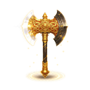
Топор Пангу4阶Увеличение жизни +15% Увеличение атаки +15% Увеличение всех атрибутов +15%
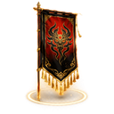
Флаг Чи Ю4阶Удвоение текущего количества убитых врагов (максимум 10 000).
Ранг 3 12
Внеземные железные метеориты3阶
Базовые характеристики артефактов роста увеличиваются на 30%, а количество золотых монет, необходимых для продвижения артефактов роста, уменьшается на 20%.
Демонический горшок для переработки3阶
Урон, наносимый сложным монстрам, увеличивается на 30%. Награды за выполнение заданий увеличиваются на 20%.
Золотой билет3阶
Получите бесплатные розыгрыши облигаций 2
Кнут закона3阶
+10 к скорости атаки, +30 к пробиванию брони за каждые 2000 убитых врагов.
Копье Лонгина3阶
Урон, наносимый элитным монстрам, увеличивается на 10%. При убийстве элитных монстров вероятность 10% увеличивается на очки 1 за убийство противника.
Меч убийства3阶
Смертельная атака +2 Увеличение атаки +15%; Набор: броня постоянно увеличивается на 1 очков каждые 30 секунд.
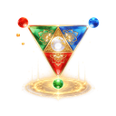
Мощность трёх фаз3阶Физический урон +25% Магический урон +25% Взрывной урон +30%
Оборудование глухой короб3阶
Немедленно получите 1 частей случайного снаряжения уровня 5.
Пожирающая таблетка3阶
Получите 1 Пожирающие таблетки.
Сердце из стали3阶
Убить врага, жизнь +20 Увеличение жизни +15%
Сто рафинировочная печь3阶
Получите молотки для перековки 5. При использовании перековочного молота существует вероятность 20% получить дополнительный перековочный молот.
Человек и меч объединяются3阶
Предел пожирания оборудования +1
Ранг 2 17
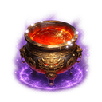
Алхимия2阶Золотых монет в секунду +3 Бонус золотых монет +10%
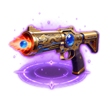
Виноватое удовольствие2阶Смертельная атака +1 дальность атаки +200; Набор: интервал атаки -0.1.
Извлечь душу2阶
Уничтожение разведки противника +1 Увеличение интеллекта +10%
Источник жизни2阶
Увеличение жизни +3% 500 достигается за счет убийства врагов. 0.5% навсегда получается при убийстве врагов. Увеличение жизни (лимит — 15%); установлено: лимит увеличен до 25%
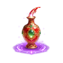
Истощение жизни2阶Убийственная сила врага +1 Увеличение силы +10%
Кровожадный2阶
+1 к атаке и +25 к скорости атаки за каждого убитого врага.
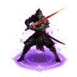
Не убивайте неизвестных людей2阶Урон по боссу увеличен на 5%; Набор: окончательный урон +5%; все атрибуты увеличены на +5%
 Печь для мяса2阶
Печь для мяса2阶убийства в секунду +1 Бонус за убийство +10%; Набор: Бонус опыта +10%.
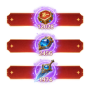
Посмотрите на мой результат2阶Окончательный урон +3% Получено 1 бесплатное обновление героя.
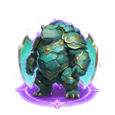
Поцарапать? Примените немного силы.2阶Урон, получаемый от босса, уменьшен. 5%
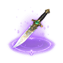
Столбнячный клинок2阶+30 к пробиванию брони, +5% к усилению всех характеристик и +10 к скорости атаки.
Сумасшедшее боевое сердце2阶
Усиление атаки +3%. За каждые 10 000 золота, полученные за убийства, навсегда даётся +0,5% усиления атаки (максимум +15%).
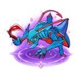
Уничтожить муравьев2阶Физический урон +25% Критический урон +15%
Ускорить двигатель2阶
Ловкость для убийства врагов +1 Увеличение ловкости +10%; Набор: Все атрибуты для убийства врагов +1 Все атрибуты увеличиваются +8%
Чаша с сокровищами2阶
Увеличивает урон, наносимый сложным монстрам, на дополнительные 10%. +5% к эффективности золотых монет, +5% к эффективности убийства врагов.
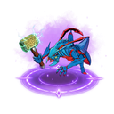
Электрический молоток муравей2阶Магический урон +25% Критический урон +15%; Набор: Шанс критического удара 5%
Я хочу расти2阶
Бонус опыта +5% Бонус золотых монет +5% Бонус за убийство +5%
Ранг 1 11
Алмазный талисман1阶
Получите 100% усиление физического урона на 60 секунд, с постоянным увеличением усиления физического урона на 10% после 60 секунд.
Духовный талисман1阶
Получите 100% усиление магического урона на 60 секунд, с постоянным увеличением усиления магического урона на 10% после 60 секунд.
Знамя десяти тысяч душ1阶
Получите 1 единицу всех характеристик за каждые 10 убийств врагов; получите 0,5% критического урона за каждые 200 убийств врагов.
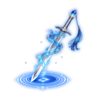
Ковка души меча1阶Базовые атрибуты артефакта роста увеличены на 5%; артефакт роста пассивно убивает врага 10% и имеет вероятность получения очков 1 всех атрибутов.
Молниеносный талисман1阶
Получите 50 скорости атаки на 60 секунд, с постоянным увеличением скорости атаки на 10 после 60 секунд.
Питательная бутылочка для души1阶
Получите 1 единицу всех характеристик за каждые 20% шанса убить врага.
Победить, лежа1阶
Получайте бонус золотых монет +1% каждые 60 секунд и бонус за убийство врага 1%.
Сбор Ганодерма1阶
Получите случайные золотые монеты 8888 -18888.
Следующий лучше1阶
Следующий выбор сокровища гарантированно содержит 1 сокровище 4-го ранга.
У меня нет К1阶
Совершите случайное количество убийств врагов 888 -1888.
Я хочу попасть в десятку1阶
Урон, наносимый мобам, увеличивается на 5%;
UR 5
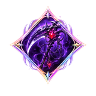
Кровавая пропастьURУвеличение физического урона +6%, увеличение магического урона +6%, урон БОССА +8%, восстановление здоровье в секунду +2%
[Жажда крови] Призывает 1 кровавую сферу каждые 10 секунд. Раз в 0.5 секунды она наносит 10 случайным врагам поблизости адаптивный урон в размере 300% адаптивного атрибута. Через 3 секунды сфера взрывается, восстанавливая 25% здоровья и создавая Кровавую бездну, которая наносит урон в радиусе 750 ед. в течение 4 секунд.
Источник: Покупка в магазине
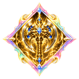
Боевой топорURПробитие брони +75, критический урон +50%, бонус к итоговому урону +8%, бонус к эффективности опыта +10% от максимального уровня +1
[Божественная кара] Каждые 8 секунд призывает гигантский топор. Раз в 0.5 секунды он наносит адаптивный урон в размере 375% адаптивного атрибута в радиусе 500 ед. вокруг 6 случайных целей. Через 4 секунды топор взрывается, нанося адаптивный урон в размере 700% адаптивного атрибута в радиусе 1500 ед. Этот урон может быть критическим.
Источник: Покупка в магазине
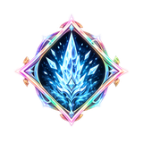
Ядро из ржавого болотного ядаURУвеличение силы +10%, увеличение ловкости +10%, увеличение интеллекта +10%, Пробитие брони +35
[Взрыв кислотного болота] Призывает кислотную жидкость каждые 10 секунд, нанося адаптивный урон адаптивных атрибутов 225% случайному диапазону кода 1000 каждые 0.5 секунд, длительностью 6 секунд.
Источник: Награда за уровень карты
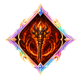
Волшебный ящикURУскорение навыков +30, скорость критического удара +7%, критический урон +20%, финальный урон +5%
[Адский прокол] Вызывает адские шипы 12 к ногам случайных врагов каждые 8 секунд, нанося адаптивный урон с адаптивными атрибутами 300% целевым 475 ярдам.
Источник: Награда боевого пропуска
Святое Копье Утренней ЗвездызакрытUR
Скорость атаки +30%, скорость передвижения +90, восстановление здоровья в секунду +1.5%, эффективность опыта +10%
[Священное копье] Выстреливает из легких пушек 8 по случайным врагам каждые 7 секунд, нанося адаптивный урон с адаптивными атрибутами 350% цели в радиусе 550 ярдов.
Источник: Разблокировка в будущих событиях
SSR 4
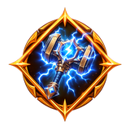
Ядро штормаSSRСкорость атаки +30%, Ускорение навыков +25
[Leap Thunder] Вероятность 20% срабатывает при атаке или ранении, выбрасывая 12 врагов, нанося 225% адаптивный урон.
Источник: Награда за вход 7 дней
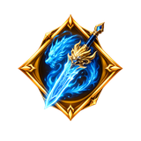
Лунин ЮфэнSSRУскорение навыков +30, критический урон +25%, Пробитие брони +20
[Тень Дракона] Призывает Божественный Меч каждые 8 секунд, чтобы наносить адаптивный урон адаптивными атрибутами 300% случайным врагам и окружающим кодам 350, а также выпускает 5 Дао Юлун, летающий кодами 2000 по окружающей среде, чтобы снова нанести урон врагам, с которыми он сталкивается.
Источник: Обмен очков
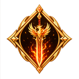
ФейхуанзакрытSSRУскорение навыков +15, скорость атаки +25%, Пробитие брони +10, восстановление здоровья в секунду +2.5%
[Перо феникса] Каждые 10 секунд призывает 3 фениксов, которые кружат вокруг героя 3 секунды. Каждую секунду они наносят врагам в радиусе 200 адаптивный урон в размере 55% и восстанавливают 5% максимального здоровья. Затем они летят к врагам и наносят адаптивный урон в размере 125% в радиусе 400.
Источник: Разблокировка в будущих событиях
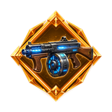
Магазинный пистолетSSRСкорость атаки +50%, вероятность критического удара +5%, Пробитие брони +20
[Протокол «Дождь пуль»] Постоянно стреляет, нанося адаптивный урон случайным юнитам с помощью адаптивных атрибутов 35% каждые 0.1 секунд.
Источник: Награда боевого пропуска
SR 1
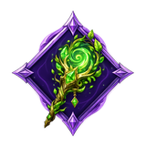
Призыв посохаSRВосстановление HP в секунду +1%
[Семя] Запускайте духовные семена 9 каждые 14 секунд, чтобы окружить ближайшего врага на 4 секунд, нанося урон адаптивному атрибуту 200% каждую секунду.
Источник: Начальный артефакт
Неофициальный справочник. Названия и эффекты из локализации игры, значения могут меняться с обновлениями.